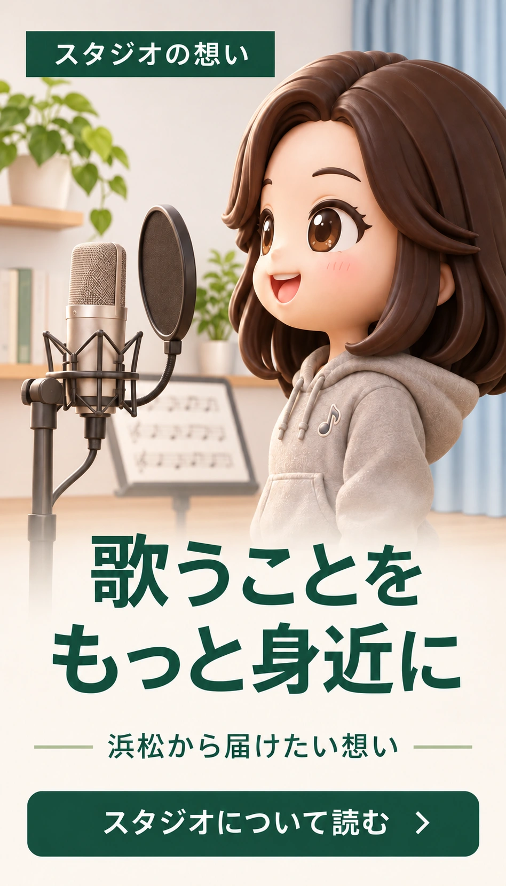
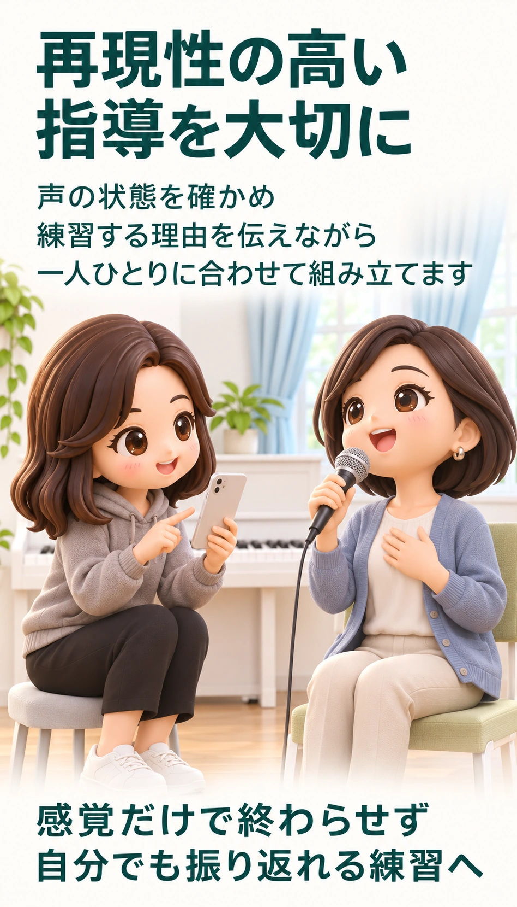
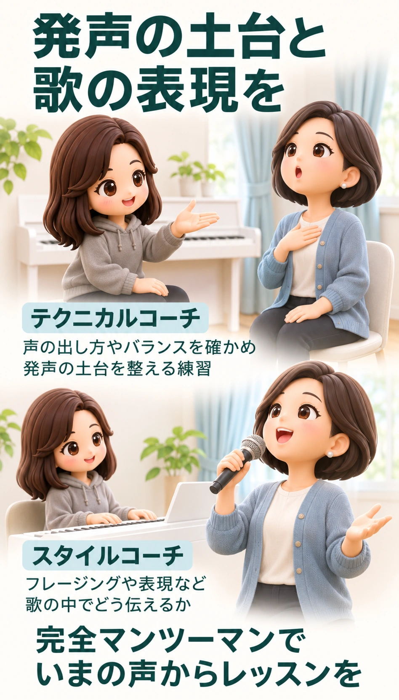
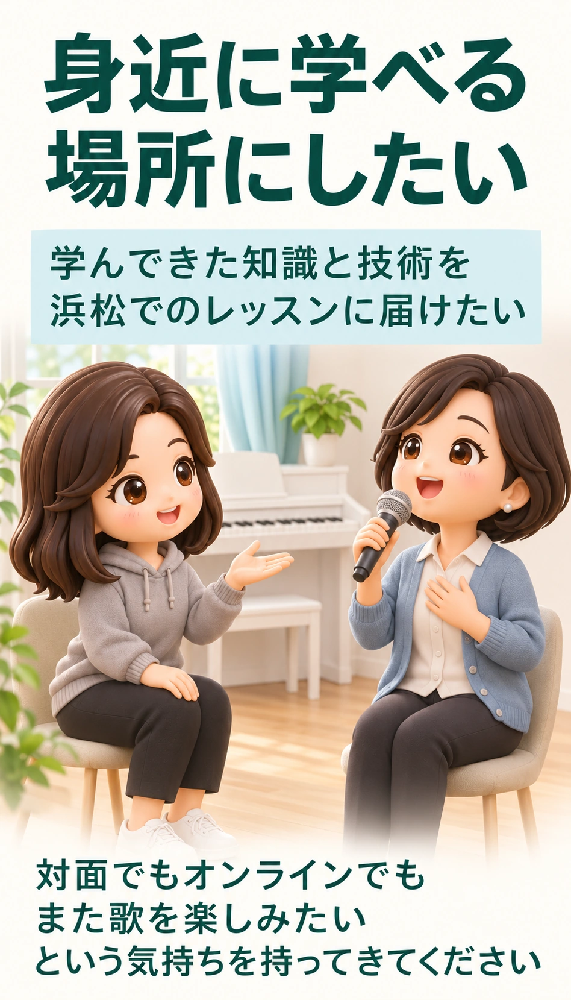

スタジオの想い
歌うことを
もっと身近に
浜松・オンライン / 完全マンツーマン
再現性の高い
指導を大切に
声の状態を確かめ
練習する理由を伝えながら
一人ひとりに合わせて組み立てます

感覚だけで終わらせず
自分でも振り返れる
練習へ
発声の土台と 歌の表現を
テクニカルコーチ
声の出し方やバランスを確かめ
発声の土台を整える練習
スタイルコーチ
フレージングや表現など
歌の中でどう伝えるか
完全マンツーマンで
いまの声からレッスンを
身近に学べる
場所にしたい
学んできた知識と技術を
浜松でのレッスンに届けたい
対面でもオンラインでも
また歌を楽しみたい
という気持ちを持ってきてください

歌うことを もっと身近に

スタジオについて読む

